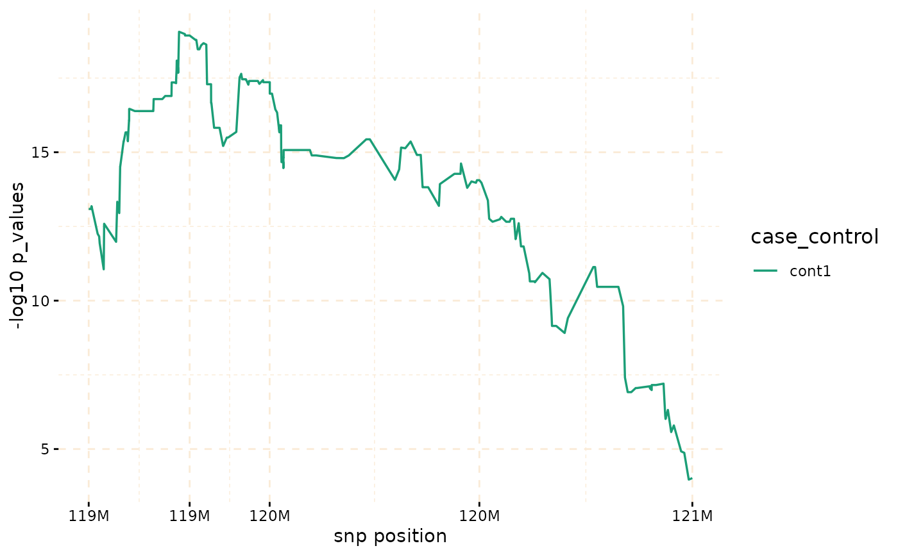

Extract information from ibd data.
Usage
# S3 method for class 'gwid'
extract(obj = "object of class gwid", snp_start, snp_end, ...)Value
the output will be a result_snps (data.table) object including 3 columns including, “snp_pos”, “case_control”, and “value”
Examples
# \donttest{
piggyback::pb_download(repo = "soroushmdg/gwid",tag = "v0.0.1",dest = tempdir())
#> ℹ All local files already up-to-date!
ibd_data_file <- paste0(tempdir(),"//chr3.ibd")
genome_data_file <- paste0(tempdir(),"//chr3.gds")
phase_data_file <- paste0(tempdir(),"//chr3.vcf")
case_control_data_file <- paste0(tempdir(),"//case-cont-RA.withmap.Rda")
# case-control data
case_control <- gwid::case_control(case_control_rda = case_control_data_file)
names(case_control) #cases and controls group
#> [1] "cases" "case1" "case2" "cont1" "cont2" "cont3"
summary(case_control) # in here, we only consider cases,cont1,cont2,cont3 groups in the study
#> Length Class Mode
#> cases 478 -none- character
#> case1 178 -none- character
#> case2 300 -none- character
#> cont1 477 -none- character
#> cont2 478 -none- character
#> cont3 478 -none- character
case_control$cases[1:3] # first three subject names of cases group
#> [1] "MC.154405@1075678440" "MC.154595@1075642175" "MC.154701@1076254706"
# read SNP data (use SNPRelate to convert it to gds) and count number of minor alleles
snp_data_gds <- gwid::build_gwas(gds_data = genome_data_file,
caco = case_control,gwas_generator = TRUE)
class(snp_data_gds)
#> [1] "gwas"
names(snp_data_gds)
#> [1] "smp.id" "snp.id" "snp.pos" "smp.indx" "smp.snp" "caco" "snps"
head(snp_data_gds$snps) # it has information about counts of minor alleles in each location.
#> Key: <snp_pos>
#> snp_pos case_control value
#> <int> <fctr> <int>
#> 1: 66894 cases 627
#> 2: 66894 case1 240
#> 3: 66894 case2 387
#> 4: 66894 cont1 639
#> 5: 66894 cont2 647
#> 6: 66894 cont3 646
# read haplotype data (output of beagle)
haplotype_data <- gwid::build_phase(phased_vcf = phase_data_file,caco = case_control)
class(haplotype_data)
#> [1] "phase"
names(haplotype_data)
#> [1] "Hap.1" "Hap.2"
dim(haplotype_data$Hap.1) #22302 SNP and 1911 subjects
#> [1] 22302 1911
# read IBD data (output of Refined-IBD)
ibd_data <- gwid::build_gwid(ibd_data = ibd_data_file,gwas = snp_data_gds)
class(ibd_data)
#> [1] "gwid"
ibd_data$ibd # refined IBD output
#> V1 V2 V3 V4 V5
#> <char> <int> <char> <int> <int>
#> 1: MC.AMD127769@0123889787 2 MC.160821@1075679055 1 3
#> 2: MC.AMD127769@0123889787 1 MC.AMD107154@0123908746 1 3
#> 3: MC.AMD127769@0123889787 2 9474283-1-0238040187 1 3
#> 4: MC.AMD127769@0123889787 1 MC.159487@1075679208 2 3
#> 5: MC.163045@1082086165 2 MC.160470@1075679095 1 3
#> ---
#> 377560: 1492602-1-0238095971 2 2235472-1-0238095471 2 3
#> 377561: 4618455-1-0238095900 2 3848034-1-0238094219 1 3
#> 377562: MC.160332@1075641581 2 9630188-1-0238038787 2 3
#> 377563: MC.AMD122238@0124011436 2 MC.159900@1076254946 1 3
#> 377564: MC.AMD105910@0123907456 1 7542312-1-0238039298 1 3
#> V6 V7 V8 V9
#> <int> <int> <num> <num>
#> 1: 32933295 34817627 3.26 1.884
#> 2: 29995340 31752607 4.35 1.757
#> 3: 34165785 35898774 6.36 1.733
#> 4: 21526766 23162240 8.71 1.635
#> 5: 11822616 13523010 5.29 1.700
#> ---
#> 377560: 194785443 196328849 4.92 1.543
#> 377561: 190235788 192423862 7.77 2.188
#> 377562: 184005719 186184328 5.95 2.179
#> 377563: 181482803 184801115 3.58 3.318
#> 377564: 182440135 183972729 3.03 1.533
ibd_data$res # count number of IBD for each SNP location
#> snp_pos case_control value
#> <num> <fctr> <num>
#> 1: 66894 cases 27
#> 2: 82010 cases 28
#> 3: 89511 cases 29
#> 4: 104972 cases 29
#> 5: 107776 cases 29
#> ---
#> 133808: 197687252 cont3 44
#> 133809: 197701913 cont3 44
#> 133810: 197744198 cont3 44
#> 133811: 197762623 cont3 44
#> 133812: 197833758 cont3 44
# plot count of IBD in chromosome 3
plot(ibd_data,y = c("cases","cont1"),ly = FALSE)
# Further investigate location between 117M and 122M
# significant number of IBD's in group cases, compare to cont1, cont2 and cont3.
plot(ibd_data,y = c("cases","cont1"),snp_start = 119026294,snp_end = 120613594,ly = FALSE)
model_fisher <- gwid::fisher_test(ibd_data,case_control,reference = "cases",
snp_start = 119026294,snp_end = 120613594)
class(model_fisher)
#> [1] "test_snps" "data.table" "data.frame"
plot(model_fisher, y = c("cases","cont1"),ly = FALSE)

hap_str <- gwid::haplotype_structure(ibd_data,phase = haplotype_data,w = 10,
snp_start = 119026294,snp_end = 120613594)
haplo_freq <- gwid::haplotype_frequency(hap_str)
plot(haplo_freq,y = c("cases", "cont1"),plot_type = "haplotype_structure_frequency",
nwin = 1, type = "version1",ly = FALSE)
# }